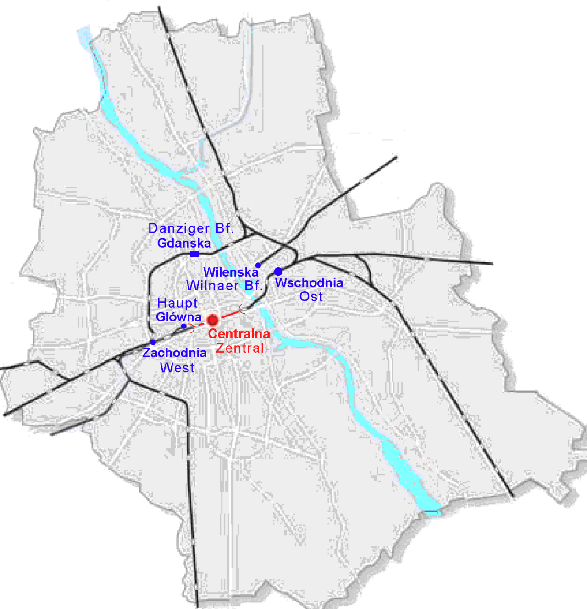

출발 · 0:00
바르샤바 중앙역
Warszawa Centralna
1975년 개관한 바르샤바 중앙역. 사회주의 시기 건축의 대표작 중 하나로, 당시 동구권에서 가장 현대적인 역으로 평가받았다. 폴란드 국내 모든 주요 도시(크라쿠프·그단스크·브로츠와프)로 가는 기차의 출발점.
한국에서 비행기로 도착한 첫 여행자라면 공항에서 도심으로 들어와 가장 먼저 거치는 자리이기도 하다. 여기서부터 우리의 6km가 시작된다.